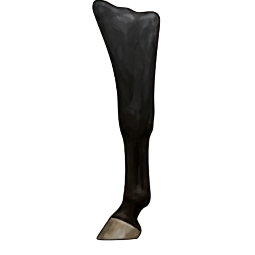
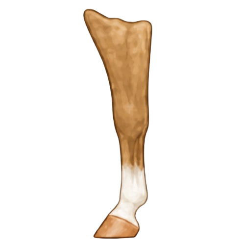
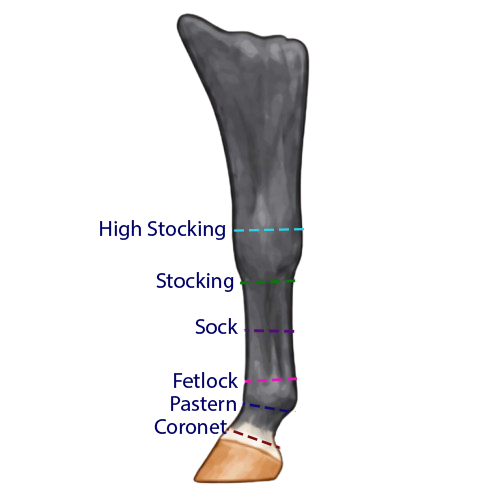

No WhiteNo Marking
No visible white marking on the lower leg. The leg remains the horse's coat color down to the hoof, except for normal hoof color variation.
Explore common lower-leg markings, partial markings, ermine marks, and height references with clear visual examples.

Leg marking names are based mostly on how high the white extends from the hoof. Use the tabs below to study standard markings, partial markings, and height guides that show where terms begin to change.
These are the common full leg marking terms learners are most likely to see. The key difference is height: how far the white extends above the hoof.

No WhiteNo visible white marking on the lower leg. The leg remains the horse's coat color down to the hoof, except for normal hoof color variation.
 Lowest White
Lowest WhiteA narrow band or area of white at or just above the coronet band, directly above the hoof.
 Pastern
PasternWhite extends above the coronet and over part or most of the pastern, but does not clearly reach high above the fetlock.
 Fetlock
FetlockWhite reaches the fetlock area. This term is often used when the marking is higher than a pastern but not high enough to be called a sock.

Lower CannonWhite extends above the fetlock and partway up the cannon bone, but does not reach as high as a stocking.
Higher WhiteWhite extends well up the lower leg, often toward the knee on a front leg or hock on a hind leg.
 Highest White
Highest WhiteA very high stocking that reaches near or above the knee or hock area. Exact descriptions should include how high it reaches.
Partial markings do not wrap evenly around the whole leg. They may appear on only one side, cover only part of the coronet, or rise unevenly up the pastern or fetlock.
 Partial Low White
Partial Low WhiteWhite touches or follows part of the coronet band, but does not form a complete band around the leg.
 Partial Higher White
Partial Higher WhiteWhite reaches the fetlock on only part of the leg or rises unevenly, making the exact location and side important to describe.
 Spotted Detail
Spotted DetailSmall dark marks within white, especially near the hoof, should be recorded because they can make two similar markings easier to tell apart.
These height guides show how far up the leg the white reaches and where marking names begin to change. Use them as visual references, not rigid rules: real markings can be uneven or irregular.
